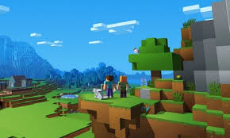
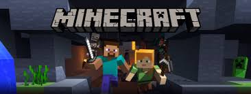
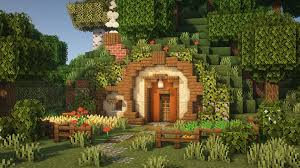
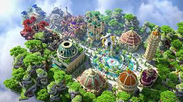
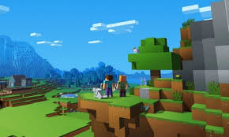
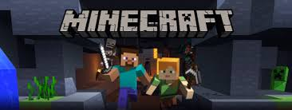
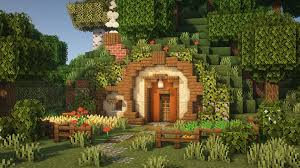
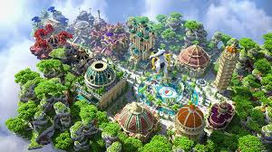

Minecraft
( вимов. Майнкрафт ; від англ. mine - "шахта; добувати" + craft - "ремесло; створювати")- комп'ютерна інді-гра в жанрі пісочниці , створена шведським програмістом Маркусом Перссоном
і випущена його студією Mojang AB . У 2009 році Персон опублікував початкову версію гри; Наприкінці
2011 року було випущено стабільну версію для комп'ютерів Windows , Linux і macOS з поширенням
через офіційний сайт. У наступні роки Minecraft була портована на мобільні пристрої під керуванням
Android , iOS та Windows Phone ; на ігрові приставки PlayStation 3 , PlayStation 4 , PlayStation Vita
, Xbox 360 , Xbox One , New Nintendo 3DS , Nintendo Switch та Wii U ; та інші платформи. У 2014 році
корпорація Microsoft придбала права на Minecraft разом із студією Mojang AB за 2,5 мільярда доларів.
У 2017 році було випущено мультиплатформну версію гри, що об'єднала різні версії для різних пристроїв.